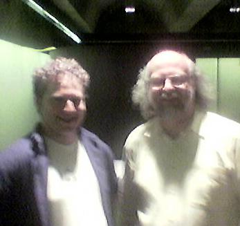

Wandering OZ
I'm in Australia this week giving some talks and visiting folks. Yesterday I was in Newcastle speaking at the Australian Computer Society, which was a wonderful experience. A great group of people.Last night I went out with the folks from Cenqua, an Australian software company that produces some excellent Java tools to help with code quality/coverage and managing the engineering process. Very very nice stuff. A very clever crew.
One of them, Matt Quail, who's the fellow I'm with in the lousey
cellphone picture here, is also the author of Totally Gridbag. He's one of the legion that have a deep
love/hate relationship with gridbags. It's another one of these APIs that has
a maze of things you can tweak to achieve essentially anything you
want. "With great power comes great responsibility
complexity". sigh.
We started out by rolling down to a place by the harbour where we could pound back some beers. This was followed by a quick debate over where to grab some dinner. They rattled off the names of some local restaurants that I knew nothing about. Then one of them said "But what we'd really like to do is head over to Bennelong for the deg". I figured this was some spicy southeast asian food, perfect with beer. I had no clue what they meant by "deg", but I let it slide since I was more involved in the geek side of the conversation. So we wander around to the other side of the harbour and walk into the Sydney Opera House where I discover that Bennelong is actually a very upscale French restaurant. The conversation with the waiter to order dinner was a quick classic piece of Australian banter: "We're here fer the deg, mate" "Bon! Cinq pour le menu dègustation!". This was followed by five hours of totally wonderful food.
What is it about geeks and food? Yum!
| January 31, 2005 |